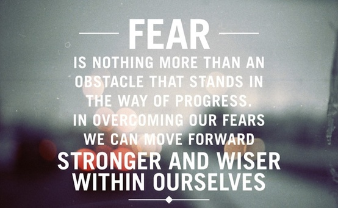

I've routinely pushed myself professionally over the years to the point where it's reflexive to seek out and embrace "professional growth opportunities" (a phrase I've also used as a euphemism - usually a bit facetiously when describing a difficult colleague and/or situation) Growth for the next few months is on re-defining myself professionally while affirming myself personally - at least that's the plan of attach for both affirming my value(s) and combating stereotype threat.
The lack of women, of diversity in general, in tech is at once both daunting and exciting. A prime example of the missing diversity was an evaluation of the 445 people honored in Google Doodles between 2010 and 2013 - 62% were white men, women were a mere 175 and women of color an ever smaller sliver at just 4%. In an article on the lack of diversity within Google's Doodles Megan Smith, a Google executive (and the former CEO of the small tech company I worked at during the first dot com boom in the late 1990s) said, "It's becoming conscious of the unconscious biases we have. Even if you didn't create the problem, once you become aware of it you can debug it and solve it. You can become part of the solution." In the same way attending a women's college made me aware of various challenges faced by my gender the work we've been doing to prepare for DBC has helped increase my awareness of the challenges faced by women (as well as other segments of the population) in the tech sector today. (With an additional huge shout out to my good friend Henry who has made it his life's mission to ensure that I see any and all disturbing statistics, articles, tweets, etc. about women in tech as he, somewhat misguidedly, feels it will keep me motivated on my path as he knows my passion for creating change.)
And then there is the plain old reality of, "All the work while crying." Basically the program is so compact the "Fuck Off" and "Panic" stages are virtually non-existent leaving only the "Work Begins, "All The Work While Crying" and "Deadline" stages. For better or worse this forces you to overcome your stereotype threats or else risk significant failure - there simply isn't a lot of time to spend worrying about failure. Which isn't to say the worry and self-doubt won't be there and won't be louder than anything when the time comes for job interviews, starting new jobs, finding one's way in a strange, new world. But there's plenty of time to deal with that when that bridge arrives...